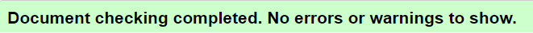

En este punto sabemos que una página web está formada exclusivamente por texto: parte de ese texto aparecerá en pantalla (son los contenidos que se quieren mostrar) y el resto estará formado por etiquetas que no aparecerán en pantalla, pero que tendrán algún efecto sobre la página (pondrán parte del texto en negrita, estructurarán los contenidos en forma de tablas o listas, cambiarán el tipo de letra o el tamaño del texto, etc.).
Las etiquetas, así como sus atributos, se suelen indicar en minúscula.
Es importante saber que las páginas web están estructuradas: es decir, que deben seguir una serie de reglas para que sean interpretadas correctamente por los navegadores web. A continuación se explica dicha estructura genérica.
Esquema general de una página web
El esquema general de una página web tiene el siguiente aspecto:
DECLARACIÓN DE TIPO DE DOCUMENTO
<html>
<head>
<title>Título de la página </title>
Elementos opcionales de la cabecera
<style>Definición de estilos de la página</style>
</head>
<body>
Contenido del cuerpo
</body>
</html>
Toda la página web debe estar almacenada entre las etiquetas <html> </html>, con la excepción de la declaración de tipo de documento. Como puede verse en la figura, hay tres partes diferenciadas en toda página web:
- Declaración de tipo de documento. Es una línea de texto que especifica el tipo de documento que hay en el archivo. Se explica en el siguiente apartado. Es la única parte de la página web que no está almacenada dentro de las etiquetas <html> </html>.
- Cabecera. Está delimitada por las etiquetas <head> </head>. En la cabecera se incluye aquella información de la página que no va a aparecer en pantalla (salvo el título de la página, que aparece en la barra superior del navegador web). Sirve para indicar el nombre del autor, palabras clave, programas script que se ejecutarán, etc.
- Cuerpo. Está delimitado por las etiquetas <body> </body>. En el cuerpo de la página se incluye aquella información que se va a representar en pantalla. En el cuerpo es donde se almacenan los contenidos de la página: texto, imágenes, tablas, listas,...
La declaración del tipo de documento
El W3C es un organismo que se encarga de fijar las normas que deben seguir los documentos escritos en HTML. Según este organismo, todo documento HTML deberá contener al principio del mismo una línea que indique qué tipo de documento es. Es lo que se llama la declaración del tipo de documento.
Al indicar la DTD (Document Type Definition) al principio del documento le estamos diciendo al navegador cómo interpretar adecuadamente el dódigo. Los tipos de documento válidos para HTML y sus declaraciones correspondientes se muestran a continuación:
- Documento HTML estricto (HTML 4). Los documentos de este tipo se ajustan a la especificación más rígida del W3C. Significa que no se pueden usar determinadas etiquetas y atributos HTML que están en fase de quedarse obsoletos. HTML 4.01 recomienda separar por completo el contenido del formato. Si cumplimos escrupulosamente con esta recomendación, almacenando toda la información sobre el formato en una hoja de estilos CSS, entonces podemos utilizar la declaración estricta. Estos documentos deberán incorporar el siguiente código al principio:
<!DOCTYPE html PUBLIC "-//W3C//DTD HTML 4.01//EN" "http://www.w3.org/TR/html4/strict.dtd"> - Documento HTML transicional (HTML 4). Los documentos de este tipo se ajustan a la especificación más permisiva del W3C. Significa que se pueden usar determinadas etiquetas y atributos HTML que están en fase de quedarse obsoletos. Si queremos combinar contenido e información de formato en nuestro documento HTML, entonces debemos utilizar la declaración de transición. Estos documentos deberán incorporar el siguiente código al principio:
<!DOCTYPE html PUBLIC "-//W3C//DTD HTML 4.01 Transitional//EN" "http://www.w3.org/TR/html4/loose.dtd"> - En HTML 5 . La declaración es más sencilla:
<!DOCTYPE html > - Copia el código de abajo en un archivo de texto (con el bloc de notas por ejemplo) con el nombre Ejemplo_1.html y luego observa el resultado en el navegador. Observa que la página web está escrita en html5 y que en la etiqueta html hemos añadido el idioma español
<!DOCTYPE html >
<html lang = "es">
<head>
<title> Mi primer página </title>
</head>
<body>
<h1> Hola Mundo </h1>
</body>
</html>
La cabecera
La cabecera almacena información sobre el título de la página y otros datos importantes, entre ellos la codificación de caracteres que emplea la página.
Codificación de caracteres
Todo documento deberá incorporar información sobre el tipo de codificación de caracteres que almacena. La codificación de caracteres depende del editor utilizado. La elección de una codificación de caracteres u otra tendrá como consecuencia que se puedan escribir los caracteres españoles (ñ, á, ò, ¿,...) directamente en el contenido de la página o que se deban emplear caracteres especiales.
La codificación de caracteres se debe elegir en el editor de páginas web que se utilice y reflejarlo en el código introduciendo una etiqueta <meta> en la cabecera de la página, de la siguiente manera:
<meta http-equiv="Content-Type" content="text/html; charset=codificacion">El parámetro codificacion deberá ser igual a la codificación que se haya elegido en el editor. Las más usuales para poder escribir los caracteres españoles son utf-8 (recomendada por ser compatible a nivel mundial) y iso-8859-1 (compatible a nivel de Europa occidental).
Así, para indicar que una página está codificada en utf-8 escribiríamos:
<meta http-equiv="Content-Type" content="text/html; charset=utf-8">http-equiv: sirve para indicar el contenido de la página y su codificación de caracteres, en este caso: HTML y utf-8.
En HTML 5 . La declaración es más sencilla: Y ES LA QUE VAMOS A UTILIZAR
<meta charset="UTF8" >
La etiqueta <title> y las etiquetas <meta>
La etiqueta <title> sirve para introducir el título de la página. El título de la página es el que aparece en la barra superior de la ventana del navegador.
<title>Título de la página</title>
La etiqueta <meta> se utiliza para varias funciones. Además, se pueden poner varias etiquetas meta en la misma página:
<meta name="author" content="nombre del autor de la página">
<meta name="copyright" content="nombre del propietario de la página">
<meta name="description" content="descripción del contenido de la página">
<meta name="keywords" content="Ciclos, Formativos, Informática, FP, DAW">
<meta name="date" content="12 de Enero de 2013 - Fecha de creación de la página">
El texto indicado en "description" es utilizado por los motores de búsqueda para indexar la página. Es el texto que suele aparecer como resultado de la búsqueda realizada por un usuario.
La lista de palabras indicadas en "keywords" son por las que queremos que nuestra página sea localizable. La inclusión de palabras no relacionadas con nuestro sitio con el fin de mejorar el posicionamiento web, se considera spam y puede ser penalizado por los motores de búsqueda.
La etiqueta <style> se utiliza para dar estilo a los elementos de la página web.
<!DOCTYPE html>
<html lang="es">
<head>
<style>
body {
background-color:#d0e4fe;
}
h1 {
color:orange;
text-align:center;
}
p {
font-family:"Times New Roman";
font-size:20px;
}
</style>
</head>
<body>
<h1>CSS example!</h1>
<p>This is a paragraph.</p>
</body>
</html>
Copia el código de arriba en un archivo de texto (con el bloc de notas por ejemplo) con el nombre Ejemplo_2.html y luego observa el resultado en el navegador.
El cuerpo
En el cuerpo de la página aparece la información que se verá en la pantalla del navegador. En el cuerpo podrán aparecer todas aquellas etiquetas que estudiaremos en las próximas secciones del tema.
<body>
Atributos
- id: sirve para asignar un nombre único a un elemento. Se utiliza para identificar elementos en hojas de estilo y en scripts.
- class: sirve para asignar un nombre de clase para varios elementos. Es posible usar el mismo nombre de clase para varios elementos. Se usa para mejorar el rendimiento de las hojas de estilo.
- title: sirve para agregar un comentario asociado a un elemento. Los navegadores muestran este comentario en una ventana emergente cuando el ratón se sitúa sobre el elemento.
- style: sirve para aplicar información de estilo a un elemento.
<!DOCTYPE html>
<html lang="es">
<head>
</head>
<body>
<p id="parrafo1"> Este es el primer párrafo, llamado "parrafo1" </p>
<p class="destacado"> Este es el segundo párrafo, de la clase destacado. </p>
<p class="destacado"> Este es el tercer párrafo, de la clase destacado. </p>
<p style="color: #0000FF; font-size: 12pt">Este es un párrafo con un estilo definido.</p>
<a title="Manual" href="http://www.w3schools.com/" >Esto es un enlace a un manual de HTML.</a>
</body>
</html>
Atributos obsoletos (no HTML 5): background, text, link, alink, vlink, bgcolor.
Estos atributos no deben usarse, ya que la forma correcta es a través de hojas de estilo o con estilos en línea como en el siguiente ejemplo.
<body style="background-color:blue" >
........
<body>
Observa que produce el mismo efecto el código de más abajo que si sustituimos la línea de body por la siguiente:
<body bgcolor="blue">
<!DOCTYPE html>
<html lang="es">
<head>
<title> Mi primer página </title>
</head>
<body style="background-color:blue">
<h1> Hola Mundo </h1>
</body>
</html>
Guárdalos con los nombres Ejemplo_3.html y Ejemplo_4.html
Eventos Intrínsecos
Hay una serie de atributos que corresponden a eventos. Por ejemplo cuando se carga una página, cuando se hace click sobre un elemento, etc...
Para utilizar estos eventos intrínsecos hay que conocer un lenguaje script, que sirva par ejecutar una determinada acción cuando se produzca un evento
Ejemplo, modifica la etiqueta body del ejemplo anterior con el código de más abajo y observa el resultado. Sálvalo como Ejemplo_5.html. Asegúrate de utilizar el carácter comilla simple
<body onload="alert('Carga completa');">
Comentarios
Los comentarios se introducen entre los símbolos <!-- y -->. Los comentarios no se pueden anidar.
<!--
Todo esto, aunque ocupe varias líneas, no aparece en pantalla ni afecta a la página web. Se suelen utilizar para realizar anotaciones útiles para el administrador, como fechas, explicaciones, etc.
-->
Caracteres especiales
Como hemos visto, las etiquetas HTML se incluyen entre los signos < y >. Además, los atributos van entre comillas (" "). De esta manera, si introducimos alguno de esos caracteres en el código HTML, estaremos indicando al navegador que lo que viene a continuación es una etiqueta o un atributo. Estos caracteres reciben el nombre de caracteres especiales.
Así pues, ¿qué haremos cuando queramos insertar en nuestra página web un carácter especial? La respuesta es que deberemos escribir un código alternativo. En la siguiente tabla se incluyen los códigos para los caracteres especiales más comunes:
Símbolo
Código
©
©
®
®
<
<
>
>
&
&
Espacio
"
"
Por otro lado, existen una serie de problemas con los caracteres de texto no ingleses (letras con acento, eñes,etc.). Depende de la codificación de caracteres empleada en la página web, estos caracteres no ingleses se verán o no se verán correctamente en la página. Codificaciones de caracteres como Unicode o ISO-8859-1 no presentan problemas, mientras que otras como ASCII no mostrarán el contenido correctamente. Por ello, existen también una serie de caracteres especiales para representar los caracteres no ingleses, que funcionarán correctamente independientemente de la codificación utilizada en la página. En la tabla siguiente se recogen los españoles:
Símbolo
Código
ñ
ñ
á
á
é
é
í
í
ó
ó
ú
ú
à
à
è
è
ì
ì
ò
ò
ù
ù
Validación del código HTML
Para verificar el código de una página HTML se puede consultar la dirección http://validator.w3.org/. En esta página se puede insertar el código de la página que se quiera comprobar o bien subir el archivo que contiene dicho código. Tras realizar la comprobación, ofrecerá un resultado sobre los errores que contiene.
¡Ojo! Para comprobar el código de una página web, dicho código deberá llevar obligatoriamente una declaración de tipo de documento y una indicación de la codificación de caracteres que utiliza.
En el caso de que el resultado de la validación sea correcto, nos indicará con un mensaje que podemos incluir el siguiente elemento en nuestra página para indicar que está escrita de acuerdo a los estándares del W3C:
